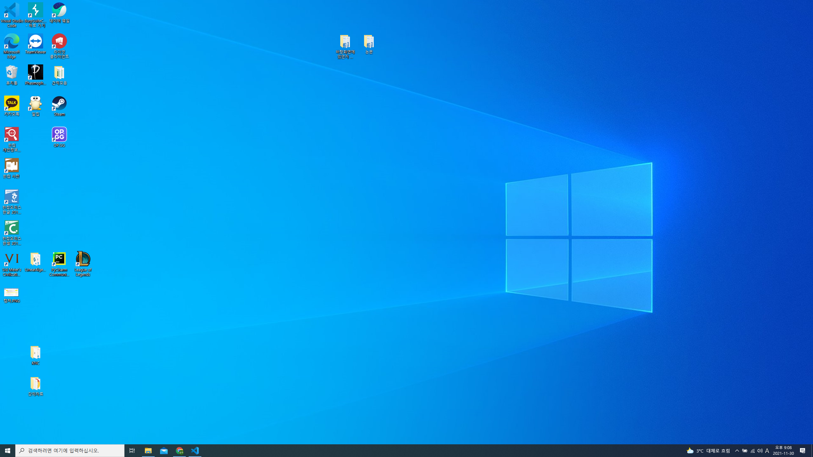
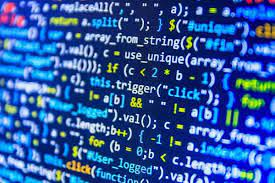

프로그래밍의 개념

프로그래밍은 프로그램을 만드는 행위를 프로그래밍이라고 해.
그렇다면 프로그램은 뭘까?
나는 프로그램이 명령어들의 집합 이라고 생각해.
컴퓨터는 다양한 일을 할 수 있어. 각종 과학계산은 몰론이고, 유튜브에서 동영상도 보고, 문서작성도 할 수 있고, 화상통화, 게임 등 정말 다양해.
이렇게 컴퓨터에게 일을 시키기 위해서 프로그램을 실행하지.
인터넷에 들어가기 위해 "브라우저" 프로그램을 실행하고, 문서작성을 위해 "워드" 나 "한글", "엑셀" 프로그램을 실행하고, 게임을 위해서 "게임 클라이언트" 를 실행하지. 모두 프로그램이야.
우리는 프로그램을 실행할 때, 실행만 하면 끝이지만, 컴퓨터 내부적으로는 복잡한 일들이 일어나고 있어
프로그램은 그러한 복잡한 일들에 대한 명령들이 논리적으로 기술되어 있어.
그것이 명령어의 집합이라고 생각한 이유야.
컴퓨터는 0과 1밖에 모른다.
프로그램이 명령어의 집합인데 그 명령어들은 어떻게 기술되어 있을까?
한글로 써져 있을까? 영어로 써져있을까?
정답은 0과 1의 데이터들로 되어있다는 거야. 01로 이루어진 데이터를이 정해진 규칙에 따라서 기록되어 있기 때문에
그것을 한글과 영어로 읽을 수 있을 뿐이지 실제로는 그저 0과 1의 데이터일 뿐이야.
그렇다면, 컴퓨터가 알아듣는 것이 기계어(0과 1의 언어) 인데, 프로그래밍도 기계어를 써서 해야하는 걸까?
그럴 수 밖에 없었던 시절도 있었지만, 지금은 컴파일러가 있기 때문에 그렇게 하지 않아도 돼.
기계어보다는 사람이 알아 보기 쉬운 문법으로 프로그래밍을 한 뒤에 컴파일러라는 프로그램을 이용해서, 기계어로 번역을 하는 거지.
그러한 프로그래밍 언어들이 기계어와 가까운 저레벨 언어 부터 자연어와 가까운 고레벨 언어까지 다양하게 존재 하고 있어.
우리는 그 중에서 고레벨 언어인 파이썬과 저레벨 언어인 C언어를 공부해볼거야.